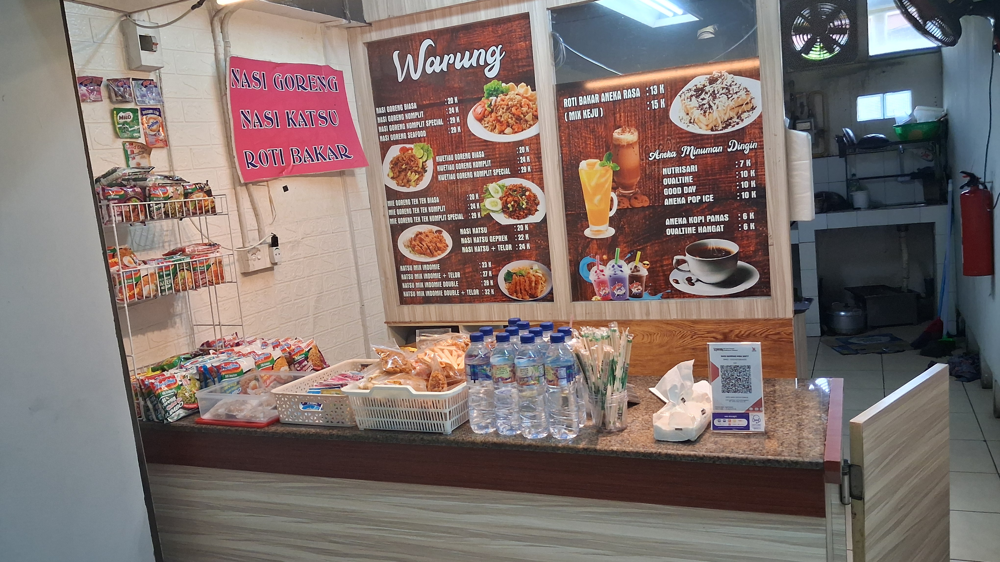

Selamat Datang

Warung Pojok Mba Sofy adalah usaha kuliner rumahan yang melayani menu masakan sehari-hari dengan cita rasa rumahan. Berdiri sebagai warung pojok yang ramai dikunjungi pelanggan sekitar, kami menyediakan aneka nasi goreng, kwetiau/mie goreng, nasi katsu, roti bakar, hingga minuman dingin dan hangat.
Semua menu dimasak fresh setelah dipesan menggunakan bahan segar setiap hari, tanpa MSG berlebih, dan resep turun-temurun dari keluarga Mba Sofy.
Keunggulan Kami
- Menu bervariasi — mulai dari Rp 6.000 !
- Porsi fleksibel — tersedia Komplit & Special !
- Dimasak fresh — pesanan dimasak langsung setelah pesanan diterima !
- Tempat nyaman — bersih dan ramah untuk seluruh pelnggan !
Jelajahi Lebih Lanjut
Ingin tahu lebih dalam tentang warung kami? Kunjungi halaman Tentang Kami untuk mengenal visi, misi, dan cerita di balik Warung Pojok Mba Sofy.